Continuité directe de la SAE S5 — passage d'une infrastructure Active Directory opérationnelle à une architecture maîtrisée, cohérente et sécurisée : optimisation AD, fiabilisation DNS, sécurisation LAN/DMZ et DNS Relay.
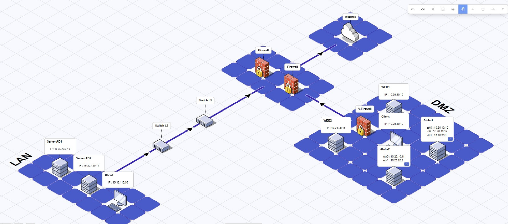
Cette SAE 6 prolonge directement le travail réalisé en SAE S5 sur l'Active Directory. L'objectif n'était plus seulement d'obtenir un domaine opérationnel, mais de le rendre cohérent, maintenable et sûr — comme on l'attendrait dans un contexte professionnel.
L'infrastructure est segmentée entre un LAN interne (contrôleurs de domaine AD, postes clients) et une DMZ exposée (serveurs web, load balancer Aloha), filtrés par un pare-feu inter-zones. Mon périmètre dans cette SAE s'est concentré sur la partie AD/DNS côté LAN.
La démarche était la suivante : vérifier, appliquer, tester, documenter. Chaque modification a été validée par des tests concrets (nslookup, dcdiag, repadmin, gpresult) avant de passer à l'étape suivante.
Fiabilisation de l'annuaire, cohérence DNS et application maîtrisée des stratégies de groupe.
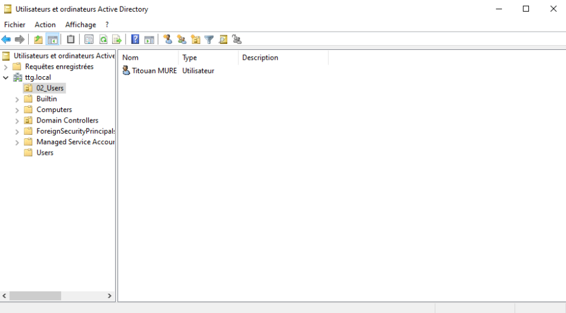
Organisation en OU dédiées : 02_Users pour les comptes utilisateurs et 03_Computers pour les postes clients. Cette structure garantit un ciblage propre des GPO et une administration maintenable, proche des pratiques professionnelles.
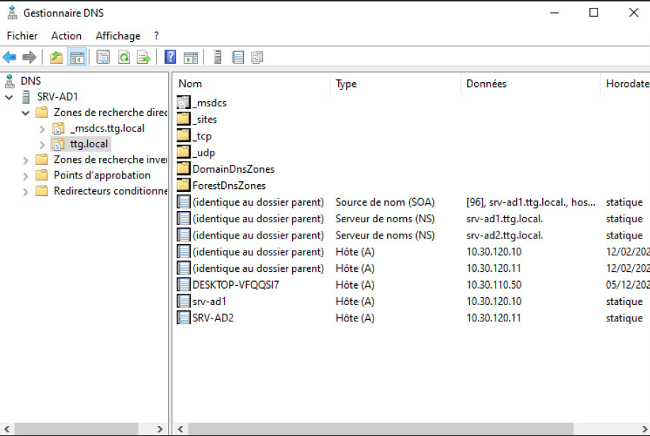
Vérification de la zone ttg.local : enregistrements A des DC (SRV-AD1 / SRV-AD2), enregistrements NS, et dossiers critiques _msdcs, _tcp, _udp. Ces enregistrements SRV permettent aux clients de localiser les services LDAP/Kerberos du domaine.
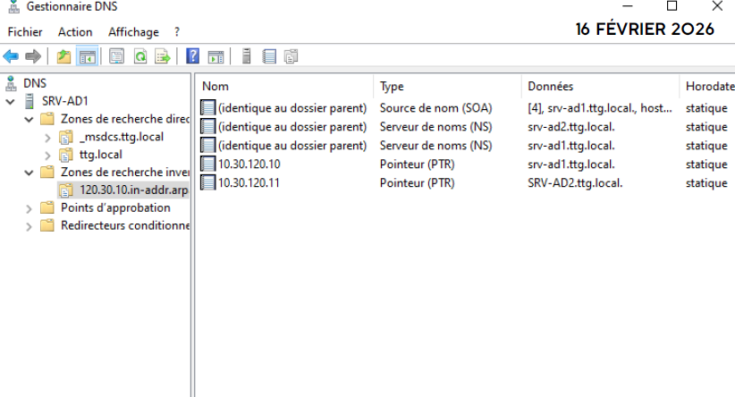
Configuration de la zone inverse 120.30.10.in-addr.arpa avec enregistrements PTR pour SRV-AD1 (10.30.120.10) et SRV-AD2 (10.30.120.11). Tests nslookup validés dans les deux sens. Mise à jour dynamique sécurisée uniquement.
Quatre GPO déployées pour durcir l'environnement utilisateur et machine.
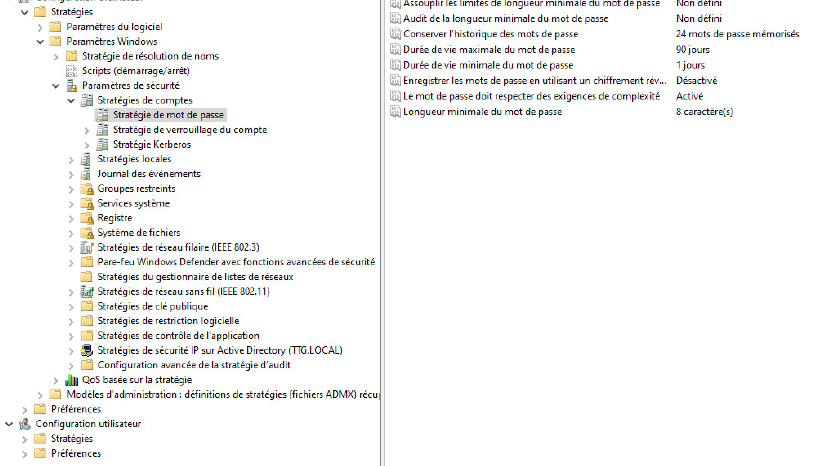
Verrouillage automatique après 300 secondes d'inactivité avec protection par mot de passe obligatoire. Appliqué via GPO utilisateur liée à 02_Users.
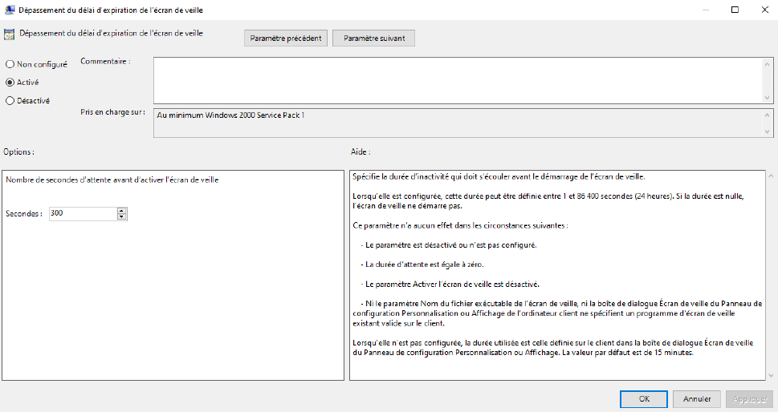
Interdiction d'accès au Panneau de configuration et à l'app Paramètres. Garantit un environnement poste stable et non modifiable par l'utilisateur.
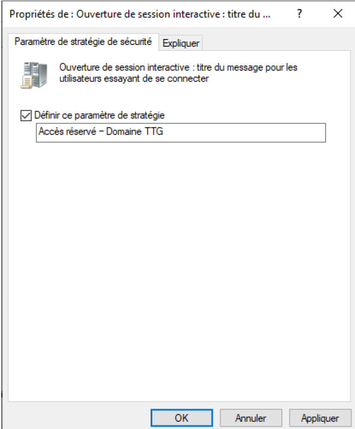
Affichage avant authentification : "Accès réservé — Domaine TTG. Toute tentative non autorisée peut être surveillée." Appliqué via GPO ordinateur liée à 03_Computers.
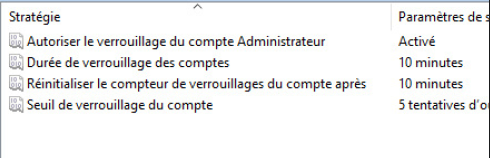
Longueur min. 8 caractères, complexité activée, durée max. 90 jours, historique 24 mots de passe. Verrouillage après 5 tentatives — durée 10 min, réinitialisation du compteur à 10 min.
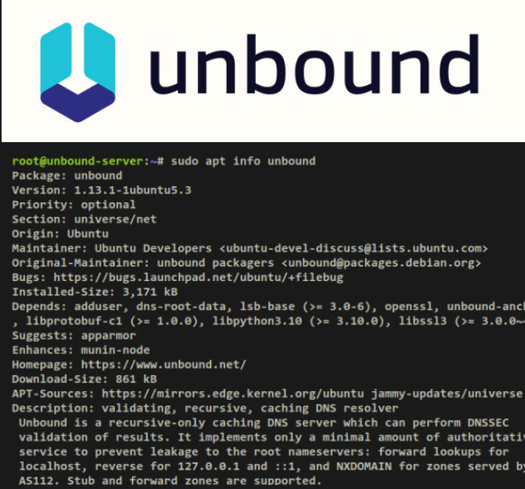
VM Linux dédiée (10.20.20.20) hébergeant Unbound en tant que DNS forwarder. Séparation DNS interne / externe — les clients LAN ne peuvent pas accéder directement à Internet. Seuls AD1 et AD2 sont autorisés à interroger le relay (UDP/TCP 53).
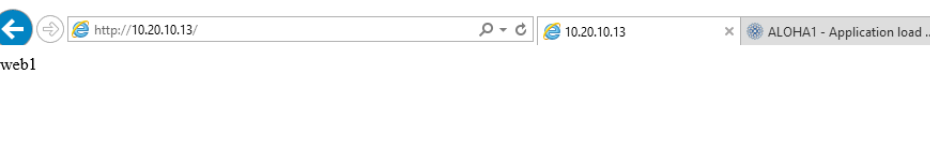
Séparation stricte LAN / DMZ — isolation des services exposés, réduction de la surface d'attaque. Politique de filtrage firewall : autorisation uniquement des flux nécessaires, blocage par défaut des communications inter-zones. Tests de connectivité validés (LAN → DMZ / DMZ → LAN).
Un domaine ne doit pas seulement "fonctionner" — il doit être prouvé stable.
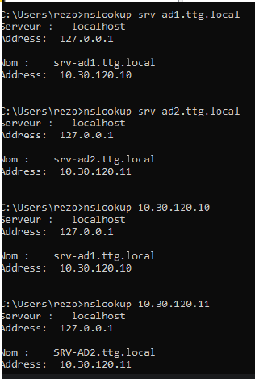
Résolution directe (nom → IP) et inverse (IP → nom) validée pour SRV-AD1 et SRV-AD2. Serveur DNS utilisé : DNS interne du domaine (127.0.0.1).
Batterie de tests sur le contrôleur de domaine et ses dépendances (DNS, services AD, intégrité des composants). Absence d'erreur bloquante confirmée.
Confirmation de la réplication entre SRV-AD1 et SRV-AD2. Absence d'échec de réplication — les objets, stratégies et mises à jour se propagent correctement.
Vérification des GPO effectivement appliquées à la session utilisateur et à la machine. Export HTML du rapport GPO archivé comme livrable documentaire.
Certains effets attendus n'étaient pas visibles côté client.
Erreurs initiales de synchronisation inter-DC.
Résolution directe OK, zone inverse absente.
Flux autorisés mais non fonctionnels côté pare-feu.